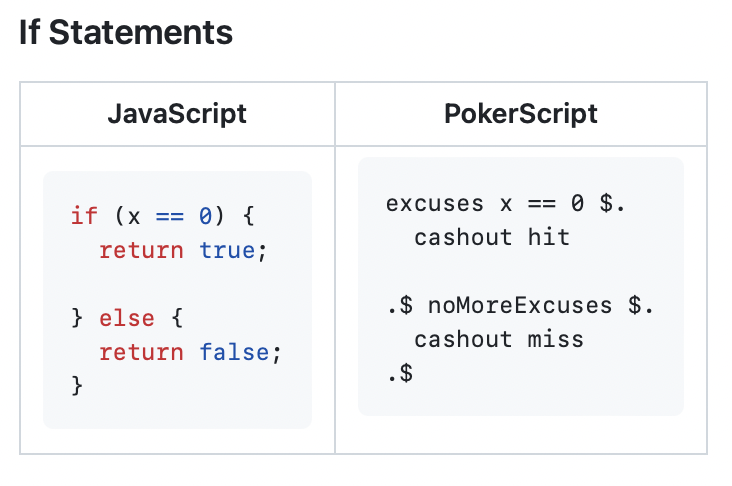

PokerScript
Introducing "PokerScript".
In a vass open ocean composed of various different kinds of Programming Languages, we found a discrepancy amongst these Programming Languages. This discrepancy was composed of our passion for Poker & similar games and for Computer Science. Out of this discrepancy came the birth of PokerScript, which is the crossroads between both of our passions.
PokerScript is a statically typed language which celebrates the unique lingo that surrounds the game of Poker. All of the types in PokerScript are derived from Poker terms, for instance the type ‘integer’ is ‘chip’ in PokerScript. One additional feature of PokerScript that we are very proud of is our inclusion of recursion.
We, the creators of PokerScript, know this not to be true. Poker is a game of skill. Our language celebrates the unique lingo that surrounds the game of poker, including both official and informal terms. `break` = `fold`. `function` = `straddle`. And so much more. We can't wait to see what you build with PokerScript, because the hand you're dealt doesn't determine the game you play.
PokerScript was built for our Compilers class in our senior year, we chose to make a programming language based on the game of Poker due to our interests in Poker.
Website Link: PokerScript.
Technologies Used: JavaScript, Ohm.JS, core.JS
PokerScript Github: GitHub